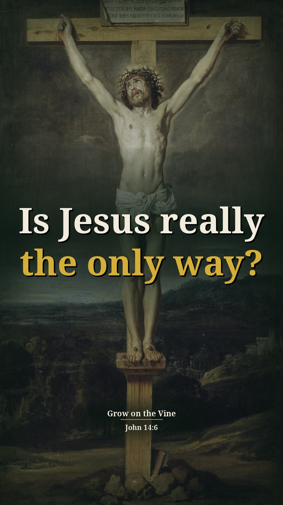
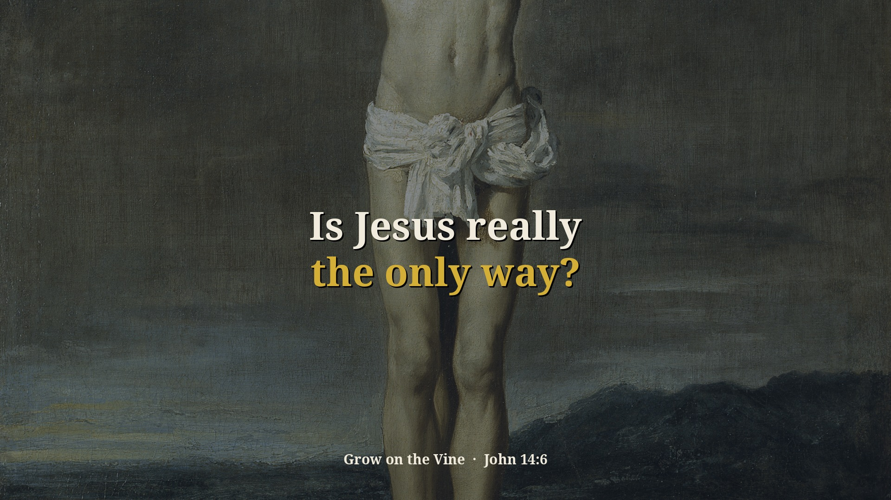

Division Concluded Part 2 — 1 new context Shorts (preview)
Preview only, not posted anywhere. Source: n_VSSQI9h3c · Pastor David G. Kincer. New Shorts from passages on sin and other religions that were skipped before. Each one includes the earlier or surrounding part of the sermon that explains why he says it. Each card follows the clip-page order: video → short answer → his words → Scripture (NKJV) → full message.
Is Jesus really the only way?
Context included: 7:36–8:05 "the kingdom of God is not in word, but in power" (1 Cor 4:20): anybody can quote Wesley, Calvin, Billy Graham, but only Jesus, the gospel and the cross bring results. That is why he says unity is around Jesus. Restores 8:23–8:29 "Muhammad out. Joseph Smith out. Jesus in."
Watch the clip
Our short summary of this clip, not the preacher's exact words
Short answer: Yes. He says anybody can quote famous writers, but only Jesus, His gospel and the cross bring results, and that's what we unite around. If somebody says there's another way or another source of truth: Muhammad out, Joseph Smith out, Jesus in. All roads don't lead to the same God.
Why: John 14:6: Jesus is the way, the truth and the life; no one comes to the Father except through Him.
“He said, the kingdom of God is not in word, but in what power”
▶ 7:36
“And if somebody says there's another way, I'm sorry, I'm sorry. Jesus is the only way.”
▶ 8:11
“Somebody says there's another source of truth. I'm sorry. Muhammad out. Joseph Smith out. Jesus in.”
▶ 8:20
“Well, you know, all roads lead to the same God and, you know, you're okay. I'm okay. Everybody's okay. You're not.”
▶ 8:45
John 14:6 Jesus said to him, “I am the way, the truth, and the life. No one comes to the Father except through Me.
1 Corinthians 4:20 For the kingdom of God is not in word but in power.
Full sermon: Division Concluded Part 2 — full message page


Other title options:
- Do all roads lead to the same God?
- Can anyone quote their way to results?
YouTube description (draft)
Is Jesus really the only way? Read the short answer, the Scripture (NKJV) and the pastor's own words: https://growonthevine.com/clips/is-jesus-the-only-way-v2/ To see the full message, click here: https://www.youtube.com/watch?v=n_VSSQI9h3c&t=456s Yes. He says anybody can quote famous writers, but only Jesus, His gospel and the cross bring results, and that's what we unite around. If somebody says there's another way or another source of truth: Muhammad out, Joseph Smith out, Jesus in. All roads don't lead to the same God. John 14:6 (NKJV) Pastor David G. Kincer · Grow on the Vine Music: "Canon In D Major" Kevin MacLeod (incompetech.com) Licensed under Creative Commons: By Attribution 4.0 License http://creativecommons.org/licenses/by/4.0/ #Shorts #Bible #Jesus